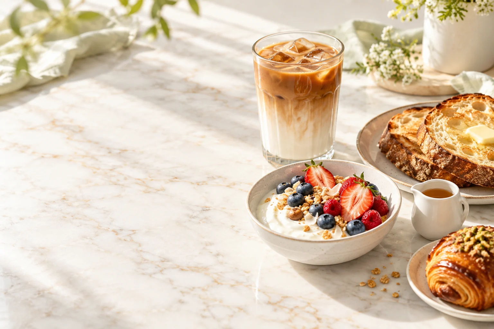
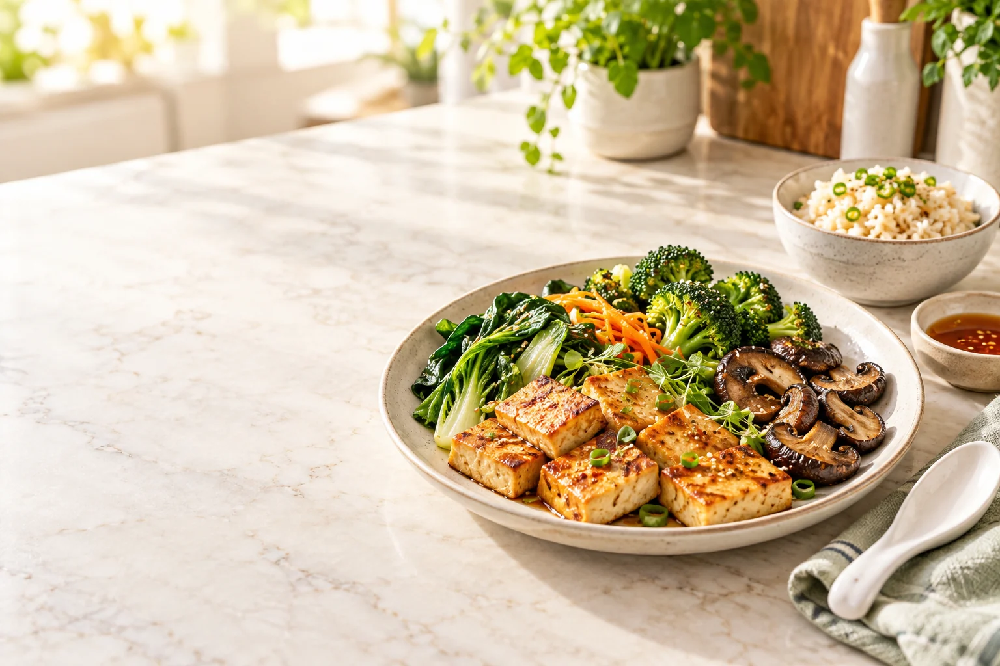

코코넛 꽃에서 채취
코코넛 열매 속 물과 구별되는 꽃 수액.
제품의 이야기는 이 원료에서 시작됩니다.
SOKFARM COCONUT BLOSSOM COLLECTION
시럽 · 설탕 · 발효소스 · 음료
코코넛 꽃에서 채취한 수액이
달콤함과 풍미를 더하는 식재료가 됩니다.
더코코가 소개하는 속팜의 네 가지 맛을 만나보세요.
ONE FLOWER.
FOUR WAYS TO TASTE.
WHAT MAKES IT DIFFERENT
코코넛 꽃에서 채취한 수액을
제품마다 다른 방식으로 가공합니다.
코코넛 열매 속 물과 구별되는 꽃 수액.
제품의 이야기는 이 원료에서 시작됩니다.
농축한 시럽, 알갱이 형태의 설탕,
소금과 발효한 소스, 수액을 담은 음료.
커피와 디저트, 베이킹과 요리까지.
원하는 맛과 용도에 맞춰 골라보세요.
MEET THE COLLECTION
이름만으로는 낯설 수 있는 제품.
특징과 활용법부터 쉽게 소개합니다.
전체 제품 4개
COCONUT FLOWER NECTAR
꽃 수액을 농축한 액상 감미료.
음식에 곁들이거나 음료에 섞어 사용합니다.
COCONUT FLOWER SUGAR
꽃 수액을 농축해 알갱이로 만든 설탕.
음료와 베이킹에 달콤함을 더합니다.
COCONUT AMINOS
꽃 수액과 소금으로 만드는 발효 조미소스.
요리에 감칠맛과 짭짤한 풍미를 더합니다.
COCONUT BLOSSOM DRINK
꽃에서 채취한 수액을 담은 음료.
코코넛 꽃의 자연스러운 단맛을 경험합니다.
국내 판매 용량과 구성은 공식 스토어 오픈 시 안내합니다.
공식 스토어 안내FROM INGREDIENT TO RECIPE
제품을 어디에, 어떻게 쓰는지.
음식과 함께 보면 더 쉬워집니다.

액상 형태라 음식 위에 곁들이기 좋은 코코넛 꽃 시럽. 플레인 요거트와 토스트, 디저트에 더하거나 음료에 섞어 보세요.


COCONUT AMINOS · EVERYDAY COOKING
코코넛 꽃 수액과 소금으로 만든 발효소스.
드레싱과 볶음, 조림과 찍어 먹는 소스까지.
평소 즐기는 요리에 새로운 맛을 더해 보세요.

음식 사진은 제품의 활용을 소개하기 위한 연출 이미지입니다.

COCONUT BLOSSOM DRINK
코코넛 꽃에서 채취한 수액을 담은 속팜의 음료.
식재료로 가공하기 전, 꽃 수액의 맛을
음료로도 만나볼 수 있습니다.
제품에 표시된 보관법과 음용 안내에 따라 즐겨보세요.
 SOKFARM · VIETNAM
SOKFARM · VIETNAMKNOW YOUR INGREDIENT
코코넛 꽃에서 정성스럽게 채취한 수액.
베트남 크메르 공동체가 이어온 전통에서
속팜의 이야기가 시작됩니다.
더코코는 속팜의 제품을 국내에 소개합니다.
원료의 출처와 제품의 특징, 요리 속 쓰임을
쉽게 이해할 수 있도록 전합니다.
FOR PROFESSIONALS
프리미엄 카페 · 호텔 다이닝 · 식품 리테일
제품의 쓰임을 함께 찾아갈 파트너를 기다립니다.